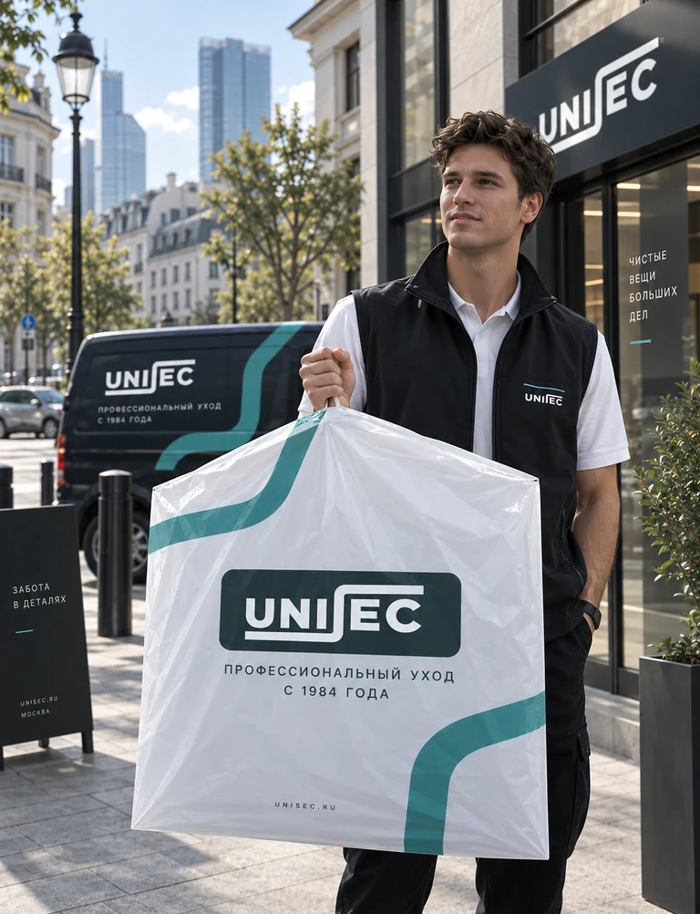
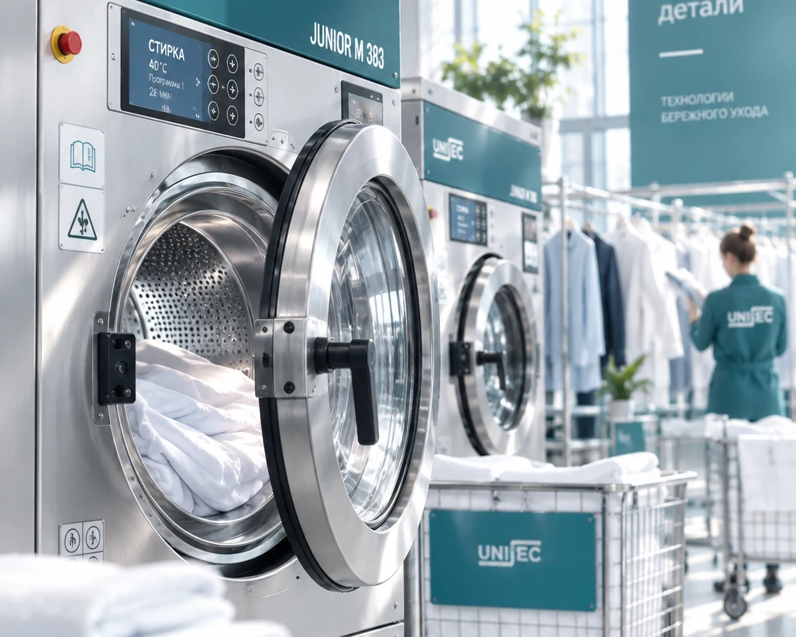
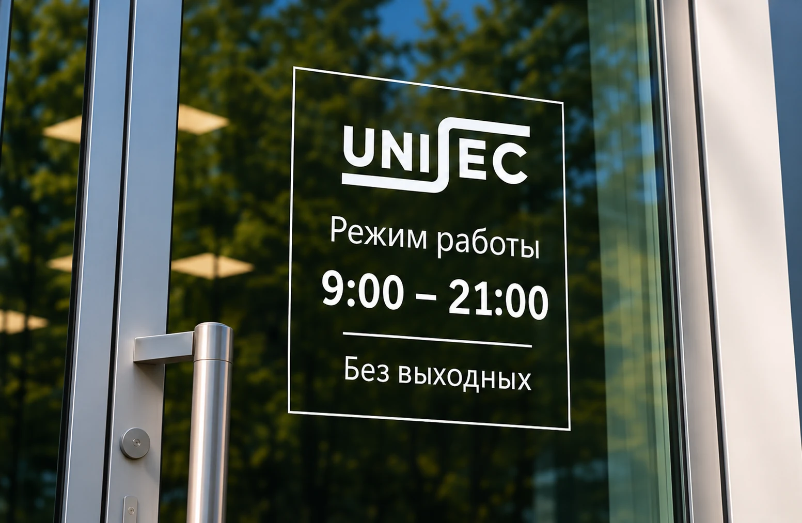
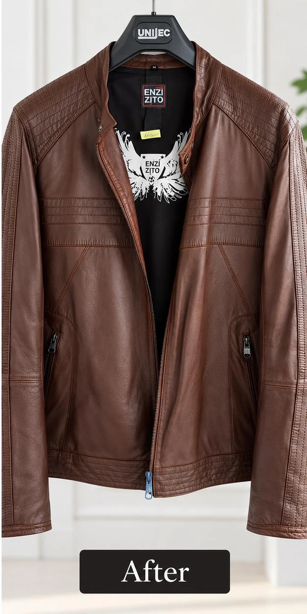
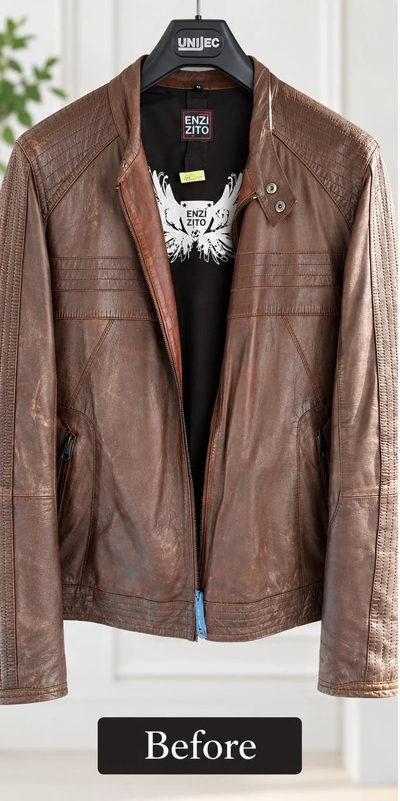

Собственная фабрика
Контролируем путь вещи от приёмки и подбора технологии до финальной подготовки.
ПРОФЕССИОНАЛЬНЫЙ УХОД · С 1984 ГОДА
UNISEC — профессиональная химчистка и деликатный уход за одеждой, обувью и домашним текстилем.

/ НАШ ОПЫТ
Сохраняем красоту любимых вещей, сочетая многолетний опыт и современные технологии.
/ УСЛУГИ
Листайте категории и откройте нужный прайс.

Собственная фабрика UNISEC/ ПОЧЕМУ UNISEC
За каждым чистым изделием стоит целый технологический процесс. На собственной фабрике UNISEC мы подбираем способ обработки, работаем с профессиональным оборудованием, выполняем чистку, глажку и финальную подготовку каждой вещи.
Для разных типов тканей и изделий применяются свои режимы обработки, что позволяет работать бережно и точно.
Путь вашей вещи ↓/ ПУТЬ ВАШЕЙ ВЕЩИ
Каждая вещь проходит свой путь. Мы подбираем технологию индивидуально и контролируем каждый этап.

Осмотр и фиксация особенностей/ СОХРАНЯЕМ ВАЖНОЕ
Бережно работаем с красителями и особенностями материала.
Учитываем конструкцию изделия и рекомендации производителя, подбираем обработку с учётом состава ткани.
Фурнитура, отделка и декоративные элементы требуют отдельного внимания — мы фиксируем их при приёмке и проверяем перед выдачей.
 Профессиональное оборудование
Профессиональное оборудование
/ УДОБНЫЙ СЕРВИС
Выберите удобный пункт, передайте заказ специалисту и заберите подготовленную вещь после обработки.
Узнать адрес пункта ↗/ СОХРАНЯЕМ ТО, ЧТО ВАМ ДОРОГО
Потяните, чтобы сравнить ↔


/ ПОЧЕМУ UNISEC
Мы не обещаем невозможного. Мы внимательно делаем свою работу — на каждом этапе.
Контролируем путь вещи от приёмки и подбора технологии до финальной подготовки.
Используем специализированное оборудование для чистки, сушки, отпаривания и глажки.
Более 40 лет работаем с разными материалами и сложными видами загрязнений.
Оцениваем изделие, фурнитуру и возможные риски до начала обработки.
Подбираем средства с учётом состава, цвета, отделки и характера загрязнения.
Проверяем внешний вид, качество обработки и глажки перед выдачей.
/ ОТЗЫВЫ
«Химчистка понравилась. Сдавала дубленку двухстороннюю перед осенним сезоном. Очистили все супер и быстро кстати!»
/ ВАШИ ВЕЩИ В ХОРОШИХ РУКАХ
Ждём вас в ТРЦ «Бутово Молл» на Чечёрском проезде, 51.
/ FAQ
Не нашли ответ? Специалисты подскажут подходящую технологию при приёмке.
Специальная подготовка не требуется — обо всём остальном позаботятся специалисты UNISEC.
Перед сдачей вещей рекомендуем:
Не переживайте, если не знаете состав ткани или способ ухода. Наши специалисты осмотрят изделие, оценят его состояние и подберут подходящую технологию обработки
Профессиональная химчистка помогает справиться даже со сложными загрязнениями и вернуть вещам аккуратный, ухоженный вид. Однако некоторые пятна и следы длительной носки могут быть необратимыми.
К ним относятся глубоко въевшиеся и застаревшие пятна от краски, масла, клея, крови и парфюмерии, а также изменения цвета ткани, потёртости и деформации, возникшие в процессе эксплуатации.
Мы бережно относимся к каждой вещи и стремимся добиться максимально возможного результата. Перед чисткой наши специалисты оценивают состояние изделия, особенности материала и характер загрязнений, чтобы подобрать наиболее эффективный и безопасный способ обработки.
Наша главная задача — не только удалить загрязнения, но и сохранить качество, форму и внешний вид ваших любимых вещей.
Срок чистки зависит от типа изделия, материала и сложности обработки. Мы подбираем технологию индивидуально, чтобы обеспечить качественный и бережный уход. Точный срок готовности специалисты сообщат при приёмке вещи.
Да, во многих случаях это возможно. Наши специалисты оценят состав и особенности материала, состояние изделия и возможные риски. На основании осмотра мы определим, можно ли безопасно провести чистку и какая технология подойдёт лучше всего.
Доверьте их профессионалам! В UNISEC мы работаем с различными видами загрязнений, включая застаревшие и трудновыводимые пятна. Наши технологи подбирают специальные средства и методы обработки с учётом ткани и происхождения пятна.
Чем раньше вы обратитесь в химчистку, тем выше вероятность успешного удаления загрязнения. Даже если полностью устранить пятно невозможно, мы постараемся добиться максимально возможного результата без повреждения изделия.
Да! Мы работаем с комбинированными изделиями, сочетающими разные виды тканей, кожу, замшу, мех и декоративные элементы.
Такие вещи требуют особого внимания. Перед чисткой специалисты оценивают совместимость материалов и подбирают наиболее подходящую технологию обработки.
Стоимость зависит от категории изделия, материала и особенностей обработки.
В цену входит профессиональная чистка по технологии, предусмотренной для выбранной услуги, а также глажка \ отпаривание вещей и упаковка в фирменный чехол.
Необходимость дополнительных работ, например сложного пятновыведения, восстановления или ремонта, оценивается отдельно.
Если изделию потребуется дополнительный уход, мы заранее сообщим об этом и согласуем стоимость.
Конечно! Мы принимаем свадебные и вечерние платья, в том числе изделия из деликатных тканей со сложной отделкой, кружевом, вышивкой и декоративными элементами.
Наши специалисты подбирают технологию с учётом особенностей платья, уделяя особое внимание сохранению его формы, фактуры и декора.